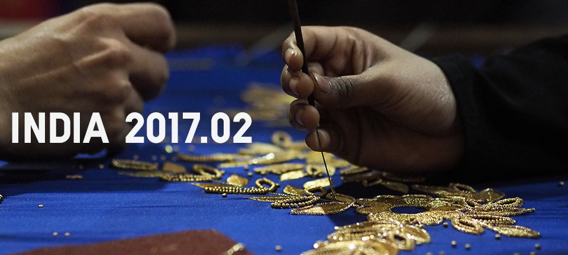
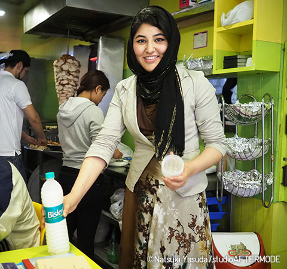

INTRODUCTION
2017.02 인도 난민의 자립을 위한 의류기부 및 자립지원
현재 인도에는 약 20만 명의 사람들이 난민으로 생활하고 있습니다.
그들 중 대다수는 도시에 살고 있으며, 일상의 삶을 살기 위해 적절한 생계수단을 필요로 하고 있습니다.
패스트리테일링은 전 상품 리사이클 캠페인을 통해, 인도의 난민들에게 필요한 의류를 전달하고,
난민자립을 위한 교육을 실시하여 그들의 자립을 지원하고 있습니다.
2017.02 인도 난민의 자립을 위한 의류기부 및 자립지원 난민의 경제∙사회적 자립 돕기
현재 인도에는 약 20만 명의 사람들이 난민으로 생활하고 있습니다.
그들 중 대다수는 도시에 살고 있으며, 일상의 삶을 살기 위해 적절한 생계수단을 필요로 하고 있습니다.
패스트리테일링은 전 상품 리사이클 캠페인을 통해, 인도의 난민들에게 필요한 의류를 전달하고,
난민자립을 위한 교육을 실시하여 그들의 자립을 지원하고 있습니다.
ESSAY
"우리를 잊지 마세요." 그렇게 중얼거리는 할머니의 눈동자를 무심코 들여다 보던 나는 보았습니다.
고향에 대한 그리움, 박해에 대한 기억, 이국 땅에서의 황망함.
이 모든 감정이 할머니의 눈에 담겨있어 더 이상의 대화를 할 수 없었습니다.
언젠가 다시 고향으로 돌아가 안심하고 편히 사실 수 있기를 바라며.
그렇게 소원을 담아 셔터를 눌렀습니다.

-
인도 여행은 벌써 세 번째,
그러나 난민을 마주한 것은 이번이 처음이었다.
도시의 불빛을 덮을 정도의 모래 먼지와 연기들,
바쁘게 오가는 사람들 사이에서 울려 퍼지는 노점상의 소리.
모든 삶의 에너지가 교차하는 수도 델리 거리에서 난민들은 어떤 생활을 보내고 있는 것일까?
인도에는 이미 20만 명의 사람들이 전쟁,기아 등의 이유로 고향을 떠나 살아가고 있다.
그들의 국적은 미얀마와 아프가니스탄처럼 지리적으로 가까운 나라에서부터, 소말리아와 수단,시리아까지 굉장히 먼 국가까지 매우 다양하다.
- 
-
＂우리나라에서는 여성이 나가서 일하는 경우가 거의 없어요."
그렇게 말하는 아프가니스탄 출신의 레일라(22)
2015 년 9 월 아프가니스탄을 떠나, 인도로 넘어온 그녀는 남동생과 여동생의 학업을 위해 이슬람 식당에서 일하고 있다.
밖을 돌아 다니는 것만으로도 늘 차별과 편견의 시선에 노출되기에, 그녀의 출근길은 언제나 모험이다.
이번 방문기간 동안 레일라 뿐 만 아니라 상당 수의 이슬람 여성들은 이러한 어려움을 토로했다.
인도는 난민 노동과 관련해 비교적 관대한 정책을 실시해 왔으며,
로컬 NGO도 난민자립을 위한 다양한 교육과 연계활동을 실시하고 있다.
하지만 아직도 인도에 거주 하는 상당 수의 난민은 익숙치 않은 언어와 문화로 인해 이 곳에서 살아가는 것을 힘들어한다.
"이 나라에서는 안전이 보장되요. 하지만 ...이 나라에서는 고향에서 보던 밤하늘이 보이지 않아요.” 이 말을 하는 레일라의 눈에서 고향을 그리워하는 모습이 얼핏 엿보인다.
내전이 일어나가 전, 그녀의 마을은 얼마나 아름다운 장소였을까. 늘 쾌활하고 미소를 잃지 않는 레일라도 자신의 마을과 가족의 이야기가 나오면 금새 얼굴이 어두워진다.
오빠의 행방을 알지 못 한지 1 년 반.
인도로 도망 온 지금도 여전히 바뀌지 않는 고향을 바라보며 오늘도 조국을 그리워하는 마음을 가슴에 묻고,살아가는 레일라.

-
이번 방문 기간 동안에는 레일라 뿐 만 아니라 다양한 난민들을 만날 수 있었다.
자수작업에 참여하는 로힝야 난민 여성들.
유명 신발 가게에서 영업직을 담당하고 있는 아프가니스탄 청년.
건어물 수출사업을 시작한 난민 가족들.
(옆의 사진의 난민 여성)
“이 나라에서 미용기술을 배우고 있어요. 이 기술을 통해 이제는 어디에 가서도 당당히 생활 할 수 있을 것 같아요.”
전문 미용사를 목표로 노력하고 있는 난민 여성이 나를 보며 말했다.
일을 통해 이들은 수입을 창출하는 것을 넘어, 타국에서 살아 갈 수 있는 힘을 얻고 당당한 사회의 일원으로 살아간다.
우리는 난민 문제를 아주 먼 이야기로 생각하는 경향이 있다.
하지만 지금도 우리와 가까운 아시아 국가에는 난민으로 살아 가고 있는 사람들이 있으며,
더 이상 난민 문제는 우리와 먼 나라의 이야기가 아닌 가까이 마주하고 있는 나라들에서 발생하고 있는 문제로 인식해야 한다..
그리고 이러한 인식 속에서 우리는 지금까지 한 일 보다 앞으로 우리가 할 수 있는 일이 더 많다는 것을 알아야 한다.
"우리를 잊지 말아줘"라고 한 할머니의 말에 우리는 어떻게 반응을 할 수 있을까..
"우리를 잊지 마세요." 그렇게 중얼거리는 할머니의 눈동자를 무심코 들여다 보던 나는 보았습니다.
고향에 대한 그리움, 박해에 대한 기억, 이국 땅에서의 황망함.
이 모든 감정이 할머니의 눈에 담겨있어 더 이상의 대화를 할 수 없었습니다.
언젠가 다시 고향으로 돌아가 안심하고 편히 사실 수 있기를 바라며.
그렇게 소원을 담아 셔터를 눌렀습니다.
인도 여행은 벌써 세 번째,
그러나 난민을 마주한 것은 이번이 처음이었다.
도시의 불빛을 덮을 정도의 모래 먼지와 연기들,
바쁘게 오가는 사람들 사이에서 울려 퍼지는 노점상의 소리.
모든 삶의 에너지가 교차하는 수도 델리 거리에서 난민들은 어떤 생활을 보내고 있는 것일까?
인도에는 이미 20만 명의 사람들이 전쟁,기아 등의 이유로 고향을 떠나 살아가고 있다.
그들의 국적은 미얀마와 아프가니스탄처럼 지리적으로 가까운 나라에서부터,
소말리아와 수단,시리아까지 굉장히 먼 국가까지 매우 다양하다.
＂우리나라에서는 여성이 나가서 일하는 경우가 거의 없어요."
그렇게 말하는 아프가니스탄 출신의 레일라(22)
2015 년 9 월 아프가니스탄을 떠나, 인도로 넘어온 그녀는 남동생과 여동생의 학업을 위해 이슬람 식당에서 일하고 있다.
밖을 돌아 다니는 것만으로도 늘 차별과 편견의 시선에 노출되기에, 그녀의 출근길은 언제나 모험이다.
이번 방문기간 동안 레일라 뿐 만 아니라 상당 수의 이슬람 여성들은 이러한 어려움을 토로했다.
인도는 난민 노동과 관련해 비교적 관대한 정책을 실시해 왔으며,
로컬 NGO도 난민자립을 위한 다양한 교육과 연계활동을 실시하고 있다.
하지만 아직도 인도에 거주 하는 상당 수의 난민은 익숙치 않은 언어와 문화로 인해 이 곳에서 살아가는 것을 힘들어한다.
"이 나라에서는 안전이 보장되요. 하지만 ...이 나라에서는 고향에서 보던 밤하늘이 보이지 않아요.” 이 말을 하는 레일라의 눈에서 고향을 그리워하는 모습이 얼핏 엿보인다.
내전이 일어나가 전, 그녀의 마을은 얼마나 아름다운 장소였을까. 늘 쾌활하고 미소를 잃지 않는 레일라도 자신의 마을과 가족의 이야기가 나오면 금새 얼굴이 어두워진다.
오빠의 행방을 알지 못 한지 1 년 반.
인도로 도망 온 지금도 여전히 바뀌지 않는 고향을 바라보며 오늘도 조국을 그리워하는 마음을 가슴에 묻고,살아가는 레일라.
이번 방문 기간 동안에는 레일라 뿐 만 아니라 다양한 난민들을 만날 수 있었다.
자수작업에 참여하는 로힝야 난민 여성들, 유명 신발 가게에서 영업직을 담당하고 있는 아프가니스탄 청년. 건어물 수출사업을 시작한 난민 가족들.
(옆의 사진의 난민 여성)
“이 나라에서 미용기술을 배우고 있어요. 이 기술을 통해 이제는 어디에 가서도 당당히 생활 할 수 있을 것 같아요.”
전문 미용사를 목표로 노력하고 있는 난민 여성이 나를 보며 말했다.
일을 통해 이들은 수입을 창출하는 것을 넘어, 타국에서 살아 갈 수 있는 힘을 얻고 당당한 사회의 일원으로 살아간다.
우리는 난민 문제를 아주 먼 이야기로 생각하는 경향이 있다.
하지만 지금도 우리와 가까운 아시아 국가에는 난민으로 살아 가고 있는 사람들이 있으며,
더 이상 난민 문제는 우리와 먼 나라의 이야기가 아닌 가까이 마주하고 있는 나라들에서 발생하고 있는 문제로 인식해야 한다..
그리고 이러한 인식 속에서 우리는 지금까지 한 일 보다 앞으로 우리가 할 수 있는 일이 더 많다는 것을 알아야 한다.
"우리를 잊지 말아줘"라고 한 할머니의 말에 우리는 어떻게 반응을 할 수 있을까..
PHOTO GALLERY
-

11월 기증된 3만4000여 점의 옷 가운데 일부는 옷이 필요한 사람들에게 배포되었습니다.
-

미얀마를 떠난 Chin족의 사람들을 위해 우리는 기증받은 의류를 전달하였습니다.
-

로힝야 난민여성들이 자수기술을 배우고 있습니다.
십자수를 배우는 장소는 난민여성들에게 일을 할 수 있는 일터인 동시에
난민여성들이 만남을 가질 수 있는 장소이기도 합니다. -

아프가니스탄의 젊은 난민 남성은 현재 유명 구두가게에서 일하고 있습니다.
그는 능숙하게 영어를 구사하며, 늘 고객을 대함에 있어 웃음을 잃지 않습니다. -

건어물 수출사업을 시작한 난민가족이
자신들의 아파트 옥상에서 건어물을 말리고 있습니다. -

아프가니스탄 여성들이 준비한 음식.
그녀들은 집을 나서기 전, 늘 음식을 준비하여 남은 가족들을 챙깁니다. -

델리의 뒷골목. 주거지와 쇼핑거리로 붐비는 이곳에서
난민 가족들은 삶의 터전을 찾아 배회합니다.
PROFILE
야스다 나츠기
야스다 나츠기는 1987년 카나가와현에서 태어나 스튜디오 AfterMODE 에서 사진기자로 활동하고 있다.
16세 때, 그녀는 국경 없는 아이들을 위한 우정 리포터로 캄보디아의 가난한 아이들을 인터뷰했다.
현재 캄보디아 뿐 만 아니라 동남아시아, 중동, 아프리카, 일본에서 빈곤과 재난에 대한 사진을 촬영하고 있으며, 동일본 대지진 이후, 리쿠젠타카타시를 중심으로 피해 지역의 상황을 기록.
2012년 그녀는 Yonoske Matori 상을 수상하였고, ‘리쿠젠타카타의 바다 생활 (포플러출판사) '이라는 제목의 사진집, '내일 시리아 난민(신코샤), 전 세계 아이들과 얼굴을 마주하는 것(니혼 사신 키쿠) 등의 서적을 출간하였다.
그녀는 소피아 대학을 졸업했다.